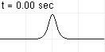
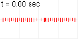
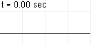
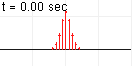

7.弾性弦の線形振動

弦の微小振動において、変位
が満たす方程式は、縦波と横波でともに波動方程式に従う：それぞれ式(
)および式(
)。波動方程式の初期値問題の解は式(
)で与えられる。
偏微分方程式の線形化
この章では、第1章で扱った弾性体でできた弦の運動方程式を、微小振動の仮定の下に、線形化する。
この章のシミュレーション（クリックで計算開始）：
7.1弦の振動の線形化
この節では、弦の振動が線形の運動方程式を満たす条件を考え、縦波および横波の場合、それぞれ式(
)および式(
)を導く。
線形化前
第1章で見たように、3次元空間中に張った弦の運動
について、運動方程式は以下のようになる：（
は釣り合い位置からの変位）
ただし
：釣り合い状態での線質量密度（定数）：弦のヤング率（定数）：釣り合い状態での弦の体積倍率（定数）：弦の体積倍率：弦と垂直な面への正射影行列
である。弦上のラベル
は、釣り合い状態において弦の弧長になっているとする。重力は無視している。
線形化：縦波の場合→式()
この方程式(
)は線形ではないので、線形化することを考える。もっとも単純なのは、
が、常に一直線上に乗っている場合である。この時、
がかかる項は消える。よって、以下のような方程式になる：
のように3次元ベクトルで表す意味があまりないので、
の
成分座標を、
で表すことにする：
なので置き換えた。これを、
（1次元）波動方程式という。
なお、
をこのように定義したのは、次節で述べるように、
が波動の伝播速度になるからである。

実際に数値計算を行ってみると右図のようになる。初期変位のみを与えた場合である。このように、波動方程式(
)の解は、直感的に予想される通り、振動が伝播していくという波動の性質を示す。特に今の場合、波動の進行方向と変位の方向が平行になっており、これを縦波という。
ただし、実際の弾性体がこの方程式を満たすのは、フック弾性体近似が成り立たなければならないので、変位がもっと小さい場合である。
線形化：横波の場合→式()
縦波以外の場合はどうだろうか。運動方程式(
)を線形化するには、正射影行列
が消える必要がある。そのためには、
にかかる項が、弦と平行か垂直でなければならない。よって、変位
は、弦と平行か垂直である。平行な場合は、上述の縦波の場合なので、垂直な場合を考える。すると、式(
)から
が消えて
となる。線形であるためには、
が定数になればよい。これは、弦の伸び縮みが小さいことを意味しているので
弦があまり複雑に波打っていない
という条件を満たせばよい。すると、式(
)は線形になるわけだが、式(
)と同じ形をしている。この場合の波動は、進行方向と垂直なので、横波という。
なお、
であるため、振動が伝わる速度は、縦波の場合よりも遅くなる。また、弦を強く張ったほうが、
が大きくなるので横波の速度は上がる。

実際に数値計算を行ってみると右図のようになる。初期変位のみの場合（左）と、初期速度のみの場合（右）である。ただし、上述のように、実際の横波がこの方程式を満たすのは、弦の伸びが無視できるような場合である。
7.21次元波動方程式の初期値問題の解
縦波の方程式(
)と、横波の方程式(
)は、ともに波動方程式
を満たす。これの初期値問題を解きたい。実際、この方程式は時間の2階微分なので、初期値として初期変位分布
と初期速度分布
を与えれば、その後の変位
が決まるはずである。
この節では、波動方程式(
)の初期値問題の解(
)を導く。
関数は無限次元ベクトルである
線形偏微分方程式を解くために、すでに扱った線形常微分方程式の議論を使うことを考える。
変数
の関数
を、
と表しておく。一方、ベクトル
の
成分は
と表される。両者を見比べると、違いは、「ベクトルの添え字
は整数」だが、「関数の添え字
は実数」というだけである。即ち、関数は、実数を添え字に持つような、無限次元のベクトルであると見なせる。模式的には、
ごとに刻んで、以下のようになる：
を十分小さくしておけば、
の関数形をほぼ再現できるので、よい近似になる。
そうすると、微分
や積分
などの線形演算子は、無限次元の行列のように見なせそうである：
ここで試しに、2つの行列を強引に掛けてみる。すると、ほぼ単位行列になっており、微分と積分がお互いに逆演算であることと整合していることが分かる。とはいえ、微分した後積分すると、積分定数のために元に戻らないので、完全な逆行列にはなってはまずい。これは、無限次元行列の積が非自明であることの現れである。
関数を無限次元ベクトルと見なすように少し見方を変えただけだが、これにより、ベクトルの場合に成り立った性質が、関数に対しても成り立つのではないかという、大胆な類推ができるようになる。このように、関数と線形演算子を、それぞれ無限次元のベクトルと行列とみなして、線形代数のように扱う数学の分野を、関数解析学という。
1次元波動方程式()の初期値問題の解：式()
では実際に、この考え方を偏微分方程式(
)：
（再掲）
に応用してみよう。
まず、これと同じ形をした常微分方程式は、線形の反発力が働く場合の運動方程式：
である。この方程式についてはよくわかっており、初期値問題の解は、力学編第2章で述べたように
となる。
波動方程式(
)と式(
)は似た形をしており、以下の置き換え：
で一致する。従って、式(
)の解は、解(
)に対して同様の置き換えを形式的に行ったもの：
であると考えられる。とはいえ、
赤字部分は、
の引数に
が現れたり、
が分母にあったりして見慣れない式である。しかし、これは計算することができるのである。実際、以下の【7.2-注1】のようになる。これを代入すると、波動方程式(
)の初期値問題の解は、初期値を
として、以下のようになる：
（ダランベールの解の公式）
これが実際に解になっていることを示すのは容易である。波動方程式を満たすことは代入してみれば、各項が波動方程式を満たすことが分かる。初期条件を満たすことは、「
とすれば右辺の積分は消えて両辺が一致する」こと、および、「両辺を
微分してから
とすると右辺の積分の項だけが残り両辺が一致する」ことから分かる。
なお、解(
)は
という形をしている
（積分を
と分離してみればよい）。
は、速度
で平行移動する解であり、
は、速度
で平行移動する解である。任意の解は、それらの重ね合わせになるわけである。よって、波動の伝播速度が
であることが分かる。また、逆に、式(
)の形で表される任意の関数は、波動方程式(
)を満たす
（実際に式()に代入してみればすぐわかる）。
【7.2-注1】微分演算子 の関数
任意の関数
に、微分演算子
の関数
を作用させた結果は、それぞれ以下のようになる：
指数関数
は、
の平行移動を引き起こす演算子なので、
は、平行移動の生成子であるという。
導出
式(
)。以下の微分方程式
の初期値問題の解は
である
（方程式と初期条件を満たすことはすぐ分かる）。式(
)の形式的な解：
（
の解を
と書くのと同じ）と式(
)の右辺同士を見比べれば、式(
)を得る。
式(
)。
関数の定義より
である。これに、先ほど求めた式(
)を使えば、よい
式(
)。
は
となる。
は微分の逆演算、即ち、積分である。よって
実際には積分定数の自由度が残るが、
の時に式全体がゼロになるようにとった。
7.3外力がある場合の波動方程式の初期値問題
外力として体積力
が働いている場合の波動方程式は
である。この節では、この方程式の初期値問題の解の公式(
)を導出する。
偏微分方程式におけるデュアメルの原理
式(
)は、非斉次方程式である。第6章の常微分方程式の場合と同様に、非斉次のデュアメルの原理からこの初期値問題の解を書き下すことができると期待できる。偏微分方程式の場合のデュアメルの原理は、以下の【7.3-注1】で与えられる。
【7.3-注1】偏微分方程式のデュアメルの原理：式()
未知の
（ベクトル値）関数
に対する斉次偏微分方程式：
（
は線形演算子）
において、初期値問題の一般解
が求められているとする。
は、式(
)の時間発展演算子である。
この時、式(
)にソース項
を加えた非斉次方程式：
の一般解は、以下のように書ける
（デュアメルの原理）：
を、式(
)における初期値問題のグリーン演算子という。
なお、
が時間に依存しない場合、
となり、式(
)は、以下のように簡単になる：
証明
証明は、式(
)を式(
)の左辺に代入するだけである。
第6章の【6.1-注1】で述べたように、常微分方程式の場合にも、同様の公式が成り立つ。
外力がある場合の波動方程式の初期値問題の解：式()
非斉次波動方程式の場合、デュアメルの原理が使える形(
)にするには、時間微分について1階正規形にする必要がある。
および
を
とおけば、1階正規形になる：
よって、初期値問題の解は、デュアメルの原理(
)により
となる。第1成分だけ分かればよい
（第2成分は第1成分を時間微分したもの）。右辺第1項は、斉次の場合の解そのものである。同第2項を計算するには、
の
成分
（＝右上成分）が必要であるが、これは、式(
)の
に作用している演算子である。これにより、初期値
およびソース項
が与えられている時の初期値問題の解が得られる：
シミュレーション

実際に数値計算を行ってみると、初期変位と初期速度をゼロとして、右図のようになる。ただし、実際の弾性体がこの方程式を満たすのは、変位がもっと小さい場合である。